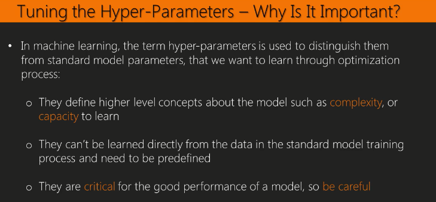
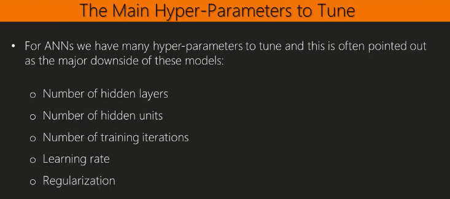
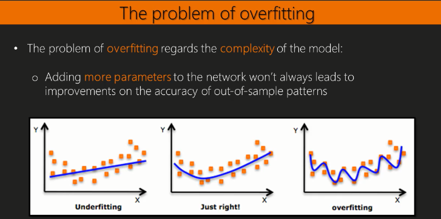
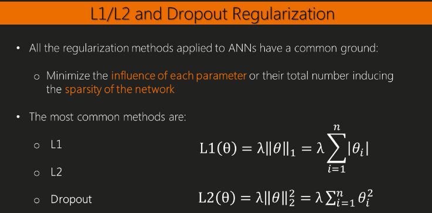
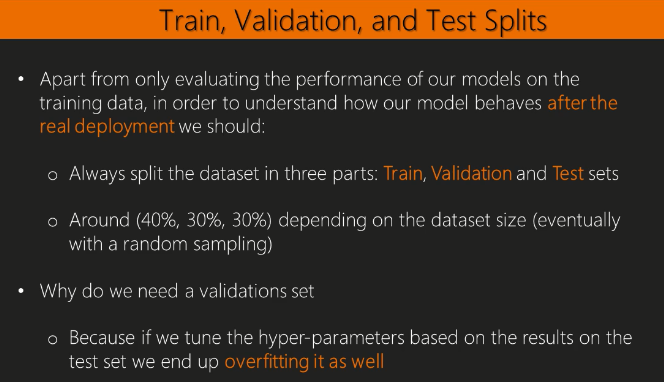
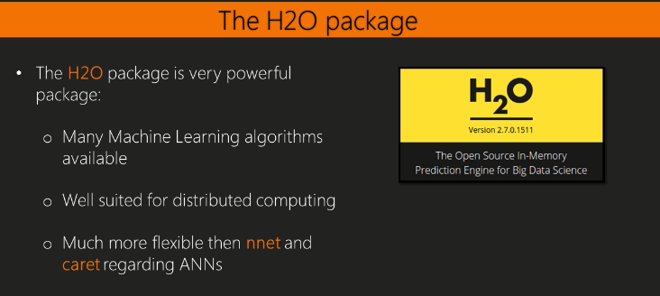
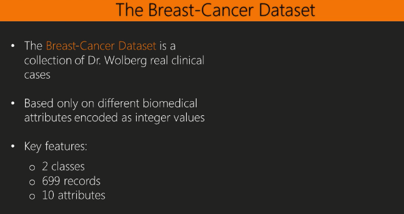

library(knitr)In this blog we are going to talk about





We will learn how to use the H2O package to classify the handritten digits in the MNIST dataset we have already presented in the previous section.

library(h2o)
localH2O = h2o.init()## Connection successful!
##
## R is connected to the H2O cluster:
## H2O cluster uptime: 23 minutes 26 seconds
## H2O cluster version: 3.16.0.2
## H2O cluster version age: 3 months and 5 days
## H2O cluster name: H2O_started_from_R_garciaj_jpx767
## H2O cluster total nodes: 1
## H2O cluster total memory: 0.69 GB
## H2O cluster total cores: 4
## H2O cluster allowed cores: 4
## H2O cluster healthy: TRUE
## H2O Connection ip: localhost
## H2O Connection port: 54321
## H2O Connection proxy: NA
## H2O Internal Security: FALSE
## H2O API Extensions: Algos, AutoML, Core V3, Core V4
## R Version: R version 3.4.0 (2017-04-21)options(digits=3)
set.seed(1234)
digits.data <- read.csv("train.csv")Split the data:
train <- digits.data[1:5000,]
valid <- digits.data[5001:10000,]
test <- digits.data[10001:15000,]
train$label <- as.factor(train$label)
train_h2o <- as.h2o(train)##
|
| | 0%
|
|================================================================================================================================================================================================================================================| 100%test_h2o <- as.h2o(test)##
|
| | 0%
|
|================================================================================================================================================================================================================================================| 100%Training a model.
#Training a deep learning model:
model <- h2o.deeplearning(x = 2:785,
y = 1,
training_frame = train_h2o,
hidden = c(10, 10),
seed=0)## Warning in .h2o.startModelJob(algo, params, h2oRestApiVersion): Dropping bad and constant columns: [pixel729, pixel448, pixel449, pixel724, pixel725, pixel726, pixel727, pixel728, pixel560, pixel52, pixel51, pixel54, pixel53, pixel168, pixel56, pixel169, pixel55, pixel58, pixel57, pixel59, pixel280, pixel559, pixel671, pixel672, pixel673, pixel674, pixel392, pixel393, pixel700, pixel701, pixel308, pixel141, pixel142, pixel780, pixel781, pixel782, pixel420, pixel783, pixel421, pixel140, pixel139, pixel777, pixel778, pixel779, pixel8, pixel9, pixel6, pixel7, pixel4, pixel5, pixel60, pixel252, pixel2, pixel3, pixel0, pixel1, pixel532, pixel644, pixel645, pixel364, pixel760, pixel10, pixel365, pixel12, pixel11, pixel643, pixel14, pixel13, pixel16, pixel15, pixel18, pixel17, pixel19, pixel754, pixel755, pixel756, pixel757, pixel758, pixel759, pixel83, pixel196, pixel82, pixel197, pixel85, pixel110, pixel84, pixel111, pixel87, pixel112, pixel86, pixel113, pixel476, pixel114, pixel477, pixel752, pixel88, pixel753, pixel504, pixel30, pixel32, pixel31, pixel223, pixel587, pixel33, pixel336, pixel699, pixel732, pixel615, pixel21, pixel20, pixel23, pixel697, pixel730, pixel22, pixel335, pixel698, pixel731, pixel25, pixel24, pixel27, pixel26, pixel29, pixel28].##
|
| | 0%
|
|================================================================================================================================================ | 60%
|
|================================================================================================================================================================================================================================================| 100%Predict the data
#Predict on test data:
yhat <- h2o.predict(model, test_h2o)##
|
| | 0%
|
|================================================================================================================================================================================================================================================| 100%h2o.confusionMatrix(model, test_h2o)## Confusion Matrix: Row labels: Actual class; Column labels: Predicted class
## 0 1 2 3 4 5 6 7 8 9 Error Rate
## 0 418 0 7 5 3 8 4 2 11 0 0.0873 = 40 / 458
## 1 0 581 3 5 0 5 2 5 4 2 0.0428 = 26 / 607
## 2 2 2 381 11 10 6 20 19 14 4 0.1876 = 88 / 469
## 3 2 1 31 418 2 31 3 12 17 1 0.1931 = 100 / 518
## 4 3 3 1 2 458 5 16 2 2 17 0.1002 = 51 / 509
## 5 11 1 6 23 3 373 11 5 12 7 0.1748 = 79 / 452
## 6 4 5 10 0 7 18 438 0 5 0 0.1006 = 49 / 487
## 7 4 4 10 10 4 2 1 451 2 23 0.1174 = 60 / 511
## 8 4 15 18 15 6 17 5 3 409 6 0.1787 = 89 / 498
## 9 3 7 2 5 27 4 0 16 8 419 0.1466 = 72 / 491
## Totals 451 619 469 494 520 469 500 515 484 479 0.1308 = 654 / 5,000
library(mlbench)
data(BreastCancer)
head(BreastCancer)## Id Cl.thickness Cell.size Cell.shape Marg.adhesion Epith.c.size Bare.nuclei Bl.cromatin Normal.nucleoli Mitoses Class
## 1 1000025 5 1 1 1 2 1 3 1 1 benign
## 2 1002945 5 4 4 5 7 10 3 2 1 benign
## 3 1015425 3 1 1 1 2 2 3 1 1 benign
## 4 1016277 6 8 8 1 3 4 3 7 1 benign
## 5 1017023 4 1 1 3 2 1 3 1 1 benign
## 6 1017122 8 10 10 8 7 10 9 7 1 malignantSplit the data
dat <- BreastCancer[, -1] # remove the ID column
dat[, c(1:ncol(dat))] <- sapply(dat[, c(1:ncol(dat))], as.numeric)
dat[, 'Class'] <- as.factor(dat[, 'Class'])
train_h2o <- as.h2o(dat[1:300,])##
|
| | 0%
|
|================================================================================================================================================================================================================================================| 100%val_h2o <- as.h2o(dat[301:500,])##
|
| | 0%
|
|================================================================================================================================================================================================================================================| 100%test_h2o <- as.h2o(dat[501:699,])##
|
| | 0%
|
|================================================================================================================================================================================================================================================| 100%Training the model
model <-
h2o.deeplearning(x = 1:9, # column numbers for predictors
y = 10, # column number for label
training_frame = train_h2o, # data in H2O format
activation = "TanhWithDropout", # or 'Tanh' -> activation function to be used by each neuron in the network. Similar to sigmoid but with different output range followed by dropout to regularize the network
input_dropout_ratio = 0.2, # % of inputs dropout
balance_classes = TRUE, # for class imbalance
hidden_dropout_ratios = c(0.5, 0.5), # % for nodes dropout
hidden = c(10, 10), # 2 layers of 10 units
epochs = 10, # max. no. of epochs
seed=0) ##
|
| | 0%
|
|================================================================================================================================================================================================================================================| 100%Performance
h2o.confusionMatrix(model)## Confusion Matrix (vertical: actual; across: predicted) for max f1 @ threshold = 0.136091605025967:
## 1 2 Error Rate
## 1 152 11 0.067485 =11/163
## 2 1 158 0.006289 =1/159
## Totals 153 169 0.037267 =12/322h2o.confusionMatrix(model, test_h2o)## Confusion Matrix (vertical: actual; across: predicted) for max f1 @ threshold = 0.809225834703778:
## 1 2 Error Rate
## 1 154 1 0.006452 =1/155
## 2 0 44 0.000000 =0/44
## Totals 154 45 0.005025 =1/199h2o.confusionMatrix(model, val_h2o)## Confusion Matrix (vertical: actual; across: predicted) for max f1 @ threshold = 0.156446747789661:
## 1 2 Error Rate
## 1 134 6 0.042857 =6/140
## 2 1 59 0.016667 =1/60
## Totals 135 65 0.035000 =7/200